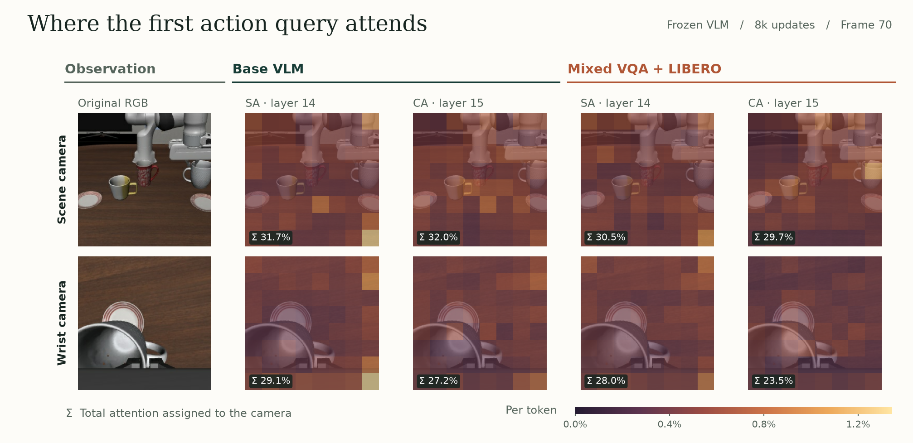

Experimental design
What changes before action training?
To put “the black bowl between the plate and the ramekin” on a plate, a policy must identify a particular object, locate it, and then act. We asked whether the first two abilities could be practised on images before the downstream action-training stage.
Collecting another physical demonstration takes time on the robot and an operator. A recorded image can support several questions about objects and their positions. We used the published SmolVLA architecture and the LIBERO benchmark to test whether that extra supervision helped. Our experiments constructed visual question–answer (VQA) pairs, varied the starting vision–language model (VLM), trained the action policy, and measured task completion. On the physical SO-101 we also recorded synchronized images and joint commands, trained policies on those recordings, and documented a hardware rollout.
- Starting VLM
- Base begins with the released SmolVLA vision–language weights. Mixed + LIBERO starts there, trains for two epochs on 21,861 LIBERO and 82,735 RoboInter-DROID question–answer pairs, then trains for one more epoch on LIBERO. The two single-source arms each use two epochs.
- Action training
- Frozen VLM updates the action expert and the state, action and time projections. Joint VLA also updates the vision, language and connector modules used for action prediction. Unused final language components are excluded. We verified identical, freshly initialized action weights across the paired arms.
The visible box of the selected bowl is [688, 348, 830, 461] on a 0–1000 coordinate scale. In the same image, its visible center is below the center of the plate.
Simulation / LIBERO
The effect of VQA depends on which weights are trained
With a frozen VLM, Mixed + LIBERO outperformed Base at all three checkpoints. With joint tuning, it led by 21.20 percentage points at 4k. By 12k, Base led by 4.20 points.
Every arm used 1,693 demonstrations (273,465 frames), a training seed of 0, and an effective batch of 64. At each checkpoint we evaluated four suites, ten tasks per suite, and 50 rollouts per task. A rollout counted as successful when the simulator’s task predicate was met. Each point below represents 2,000 rollouts.

| Action training | Starting VLM | 4k | 8k | 12k |
|---|---|---|---|---|
| Frozen VLM | Base | 51.65 | 72.45 | 74.05 |
| Frozen VLM | Mixed + LIBERO | 60.00 | 80.75 | 81.25 |
| Frozen VLM | LIBERO only | 62.00 | 78.30 | 76.75 |
| Frozen VLM | RoboInter only | 59.75 | 78.90 | 78.90 |
| Joint VLA | Base | 60.35 | 84.05 | 85.75 |
| Joint VLA | Mixed + LIBERO | 81.55 | 82.00 | 81.55 |
Where did the 84-rollout gap come from?
At 12k, joint Base succeeded in 1,715 of 2,000 rollouts, compared with 1,631 of 2,000 for joint Mixed. The Long suite accounted for 60 of those 84 additional successes. Object went the other way. The benchmark contains many different tasks, so the overall gap describes neither every task nor a particular failure mechanism.
| Suite | Frozen Base | Frozen Mixed | Joint Base | Joint Mixed | Joint Δ Mixed − Base |
|---|---|---|---|---|---|
| Spatial | 80.2 | 88.0 | 88.6 | 85.4 | −3.2 |
| Object | 79.2 | 88.0 | 87.6 | 89.6 | +2.0 |
| Goal | 79.2 | 80.8 | 83.0 | 79.4 | −3.6 |
| Long | 57.6 | 68.2 | 83.8 | 71.8 | −12.0 |
Frozen VLM · Base → Mixed
Joint VLA · Base → Mixed
For example, putting both moka pots on the stove succeeded 31/50 times with joint Base and 20/50 with joint Mixed. Putting the black bowl in the bottom drawer and closing it improved from 48/50 to 50/50. Endpoint labels cannot localize a failure to grasping, transport, or release.
We recomputed the 12k difference after dropping each task in turn. Mixed minus Base ranged from +6.31 to +8.21 pp with a frozen VLM and from −4.82 to −3.33 pp with joint tuning. Omitting the entire Long suite narrowed the joint gap to −1.60 pp. These are sensitivity checks on task composition. Only one training seed was measured.
Comparison scope. The frozen schedule reached its learning-rate floor at 8k, while joint tuning decayed until 12k. Mixed also received a final LIBERO epoch. Cross-regime and cross-corpus differences therefore include schedule or training-budget effects.
Policy rollouts
Two policies at the same starting state
Both models started at the same reset with the instruction “pick up the butter and place it in the basket.” Both had a frozen VLM and 4,000 action-training updates. This comparison uses LIBERO-only VQA for the model on the right.
We deliberately selected a disagreement. Across all 50 resets of this task, Base succeeded 21 times and LIBERO-only succeeded 47 times. The first ten recorded outcomes matched the original evaluation in both arms. This clip illustrates their difference on one reset.
Physical robot / SO-101
Pick-and-place on a physical SO-101
A simulated task can return a success flag at every step. On our workbench we first needed a repeatable record of what the robot saw and what its operator commanded.
What we ran on hardware
After calibrating the leader–follower arm, we collected 75 demonstrations of moving a red cube into a basket. Across 39,000 synchronized time steps, each sample contains two camera views and six position channels for state and action (five arm joints and the gripper). All 75 episodes went into policy training.
Our 17 November record shows a physical pick-and-place rollout after training on 75 demonstrations for 7,500 steps. Separately, saved Adam states confirm 7,500 optimizer updates in a full-tuning run, and hardware inference-server logs show that checkpoint serving action requests. The photograph has no checkpoint identifier or terminal outcome. Three later branches reached 30k real-data updates: original and aligned froze the VLM; curriculum tuned it jointly from a different external adaptation stage.
Real imagery exposed a localization gap
On an external SO-101 image dataset, we used 16,112 training, 1,675 validation and 934 test questions from 5,792 images overall. The two held-out test collection groups were disjoint from training and validation. We evaluated a 32-layer SmolVLM2-500M against model-reviewed pseudo-labels. Categorical questions use normalized short-answer agreement.
| Question family | Correct / evaluated | Accuracy |
|---|---|---|
| Image quadrant | 197 / 243 | 81.07% |
| Relative position | 37 / 51 | 72.55% |
| Color | 157 / 309 | 50.81% |
| Bounding box, IoU ≥ 0.50 | 24 / 331 | 7.25% |
We rescored all 331 box predictions. At intersection-over-union thresholds of 0.25, 0.50 and 0.75, respectively 104, 24 and zero boxes passed. For boxes specifically requested as a task target, only 1/81 passed at 0.50. Locating a coarse region was easier than matching a tight box on this test. The available data cannot connect individual localization errors to physical grasp failures.
In a separate curriculum run, the same validation questions were scored before training and at the selected fourth epoch. Allowing an unambiguous label inside a longer response, quadrant answers improved from 126/392 to 287/392 and relative position from 47/96 to 82/96. Output-format compliance rose from 73/1,675 to 1,674/1,675. These validation measurements and the held-out test above concern separate model evaluations.
Four physical conditions in collection
| Task | Simple · two blocks | Hard · three blocks |
|---|---|---|
| Pick-and-place | 150–200 | ≈250 |
| Stack | 150–200 | ≈250 |
We have yet to establish how the original 75 episodes count toward these targets. Scored physical trials require the policy checkpoint, placement conditions, success rubric and trial counts. Physical autonomous success rates for the four conditions remain open.
Inside the model
What does an action query attend to?
In SmolVLA’s Table 6, cross-attention (CA), causal self-attention (SA), and interleaved CA/SA reached 79.0%, 74.5% and 85.5% LIBERO success. We asked a narrower question inside the interleaved architecture: how much normalized attention falls on each input group?

| Starting VLM | Layer type | Image | Language | State | Action |
|---|---|---|---|---|---|
| Base | SA | 46.7 | 20.2 | 3.8 | 29.4 |
| Base | CA | 54.9 | 36.6 | 8.4 | 0.0 |
| Mixed + LIBERO | SA | 50.0 | 19.5 | 3.7 | 26.9 |
| Mixed + LIBERO | CA | 60.3 | 34.7 | 5.0 | 0.0 |
In causal SA, the action query assigns probability to image, language, state and available action keys. For Base, action mass grew from 3.4% at the first query to 45.4% at the last, where more earlier actions are available. Averaged across queries, both SA models assigned more mass to images than to actions. CA excludes action keys, giving them zero mass by construction.
The table pools three frames (20, 70, 120) of one recorded episode, eight layers of each type, 15 heads, 10 denoising steps and 50 queries. In this input, the higher-scoring frozen Mixed policy also assigned more mass to visual keys. Attention weights alone measure neither the contribution of the value vectors nor the effect of a token on the next action. The architecture ablation in the paper and the reversal under joint tuning remain separate questions.
Benchmark extension / LIBERO-Pro 2.0
Few successful rollouts on the held-out Pro tasks at 30k
On the same 1,936 recorded trials, frozen Base succeeded 3 times (0.15%) and joint Base succeeded twice (0.10%). Both policies started with the Base VLM and had 30,000 action-training updates.
The selected action-training episodes covered 32 base tasks. The official test split uses eight different base tasks, two per suite, across 339 task–variant cases. Our protocol runs ten repeats per case, giving 3,390 planned rollouts per policy. We matched the two logs by suite, base task, variant and repeat. Each recorded success is a binary simulator goal check.
| Pro suite | Planned per policy | Frozen VLM | Joint VLA |
|---|---|---|---|
| Long | 840 | 0 / 840 | 0 / 840 |
| Goal | 850 | 0 / 850 | 1 / 850 |
| Object | 860 | 7 / 860 | 1 / 246 |
| Spatial | 840 | 0 / 442 | No recorded trials |
| All recorded trials | 3,390 | 7 / 2,992 | 2 / 1,936 |
Long and Goal had complete coverage for both policies. The shared trials also include 246 Object rollouts and no Spatial rollouts. The frozen policy had progressed further, so its seven successes across all recorded trials use a different mix of cases. On identical trials, the difference was one success. The Pro-VQA checkpoint has no scored evaluation in this snapshot, so the effect of VQA on held-out Pro tasks remains an open question.
Per-trial outcomesMatched counts, protocol & cutoff
What training data did the policies see?
Sampling roughly half of the episodes within each training condition still produced 15.1 times as many frames as the original LIBERO training set.
| Dataset | Episodes | Frames |
|---|---|---|
| LIBERO | 1,693 | 273,465 |
| Pro 2.0 · full corpus | 37,396 | 8,227,242 |
| Pro 2.0 · selected | 18,751 | 4,115,692 |
We sampled 15,534 images from 7,978 episodes and aligned MuJoCo scene replays with the recorded RGB. Object masks produced 30,597 box and 29,403 relative-position questions. Of the 60,000 questions, 43,939 went to training, 11,478 to validation and 4,583 to test. Split checks found no shared task, episode or exact image. Enlarging the original 128-pixel images adds no spatial detail. A fresh replay of one S13 scene exceeded the historical pixel-error tolerance in one object region; reconstructing the archived QA and reproducing every simulator mask have different requirements.
VLM tuning completed 2,748 updates. We used the verified public LeRobot-format subset for action training, checking a 180° camera rotation and conversion from quaternion to axis–angle state. The latest confirmed 90k checkpoints cover frozen Base, frozen Pro VQA, and joint Base.
Evidence & code
Data, code and references
The task-level results and numeric box pairs are sufficient to reproduce both sensitivity analyses on CPU. The code includes data preparation, VLM and VLA training, simulation evaluation, attention capture, and the exact versions or additional assets each step requires. Physical evaluation requires a calibrated arm, cameras and a recorded scoring protocol.
Earlier checkpoints and evaluation protocols
A separate 100k pilot recorded 308/400 successes for action-side training and 309/400 for full tuning. A different 2,000-trial evaluation recorded 1,494/2,000 for the 100k action-side model. A separate full-tuning run at 15k reached 1,682/2,000 (84.10%). Initializations, training conditions or evaluation budgets differ from the main comparison. Historical runs
Sources and attribution
Research motivation, hardware setup and physical rollout documentation draw on the team’s September 22, November 3 and November 17 meeting materials. The November 23 team update supplies the four collection targets. Figure credits, licenses and source hashes accompany the data.